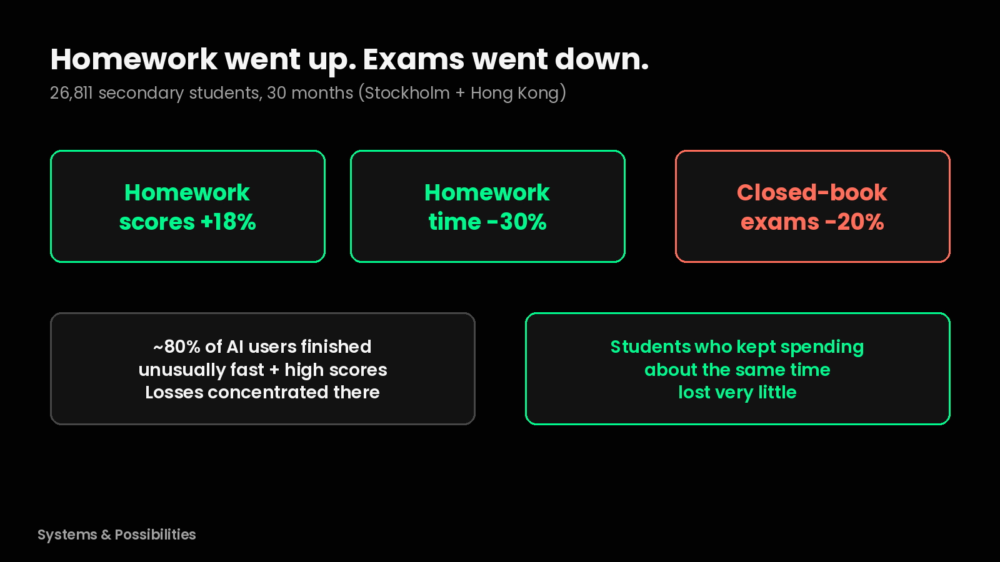
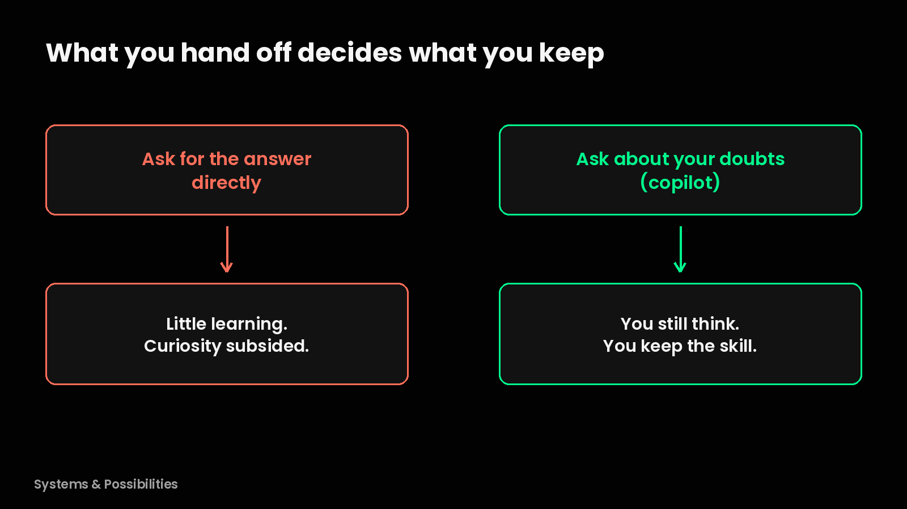
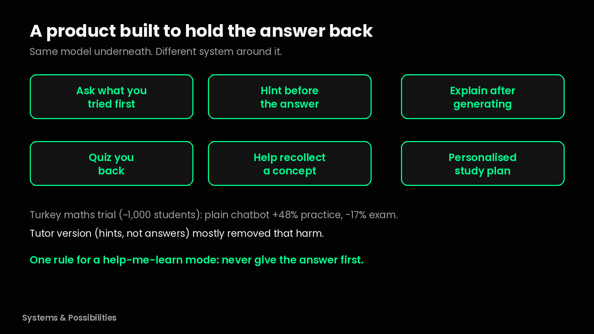

The headline this year was "AI homework tools cut exam scores by 20%". That's the announcement. This is the explanation I think should have come with it.
What happened
Researchers from Stockholm University and the University of Hong Kong followed 26,811 secondary school students in China for 30 months. After students started using AI chatbots, homework scores went up by 18% and homework time went down by 30%. But closed-book exam scores went down by 20% within six months. The big entrance exams fell by 24% and 18%, and the full drop took about two years to show up.

Homework got easier. The exams that measure what stuck got harder.
But the headline misses something. Roughly 80% of AI users finished homework unusually fast with unusually high scores, and the losses were concentrated there. The students who kept spending about the same time on homework lost very little.
So the tool alone didn't decide the outcome. What the student handed off did.
The idea: what you hand off decides what you keep
I think what we do with AI matters. If we ask for the answer directly then there is not much learning happening. The students who didn't just ask for the answer, and rather asked about their doubts, used AI like a copilot that helped them think.

Same tool. Different hand-off. Different result.
Why it happened
When AI answers something it feels like we have understood the answer, but in reality it's only satisfied our curiosity for the time being and we don't really learn anything. We need to get our hands dirty in order to actually learn anything.
When I was preparing for interviews I asked AI for all the answers to common interview questions. But that didn't help when the interviewer tried to go deeper into that topic. That is what actual learning teaches.
Take the calculator. It gives answers to many math questions directly. So when a primary school child uses a calculator for all his homework answers, there is so much learning and so many concepts he misses. Whereas when the same person is in higher grades, he uses the calculator as a support tool, because the calculator can't solve the complex problems directly. Similarly, AI should be complementing the student, like how a calculator complements a higher grader's learning.
The system: a product built to hold the answer back
A trial with nearly 1,000 high school maths students in Turkey tested exactly this. A plain chatbot helper improved practice scores by 48% but cut later exam scores by 17%. A tutor version, built by teachers to give hints instead of answers, mostly removed that harm. Same model underneath. Different system around it.
The product should be in such a way that it doesn't give the answer to the problem directly, rather outlines steps and helps the student ponder on the problem and the different ways he can think of a solution, just like how a personalized tutor would. Such kind of products should be encouraged by the parents as well.
That is why I think current LLM based chatbots are bad at it and we need products which cater specifically to this need. (LLM based chatbots just means general chat apps like ChatGPT.) For learning, yes, the product should add friction so that actual learning happens.
What would that look like? Ask what you tried first. Give a hint before the answer. Explain after generating. Quiz you back. Help in recollecting a specific concept rather than the student having to search through it. Look at our patterns, find our weaknesses and strengths and build a curated personalized study plan. This is the kind of product which will actually be helpful for a student.

Hold the answer back. Make the student think.
Those first four aren't just a wish list. In Anthropic's own trial with junior developers learning something new, the ones who asked conceptual questions, or asked for explanations along with the answer, kept their scores up.
When I use AI to learn something new, I give it my strengths and weaknesses first. I ask it to make a curated personalized plan based on my profile and my goal, and to find relevant resources. And if something is very long to read or doesn't make sense, I ask it to explain.
If I could set one rule for a "help me learn" mode, it would be simple. Never give the answer.
Will it still matter in six months?
Yes, maybe even more. In six months chatbots will be even better at giving answers, so the temptation to hand everything off only grows. And it isn't just students. AI tools for work are moving towards doing whole tasks for us in the background, which raises the same question for adults. When the tool does the task, what do we stop learning?
The setting changes the size of the effect, not the basic mechanism. Skip the effort, skip the learning.
What it makes possible
If the answer is cheap, the valuable product is the one that makes you think. Some of the big labs have started, ChatGPT already has a study mode that asks questions and gives hints first. But I think there's room for products built only for this, for students, and for anyone at work learning something new.
And honestly, I think most of us use AI as an answer machine right now. Me included, some days.
What do you ask AI to do first when you're learning something new?
Sources
- Stromberg, Lei, Wu, The Generative AI Learning Penalty (SSRN working paper, not yet peer reviewed): https://papers.ssrn.com/sol3/papers.cfm?abstract_id=6868618
- VoxChina column, 1 Oct 2026: https://www.voxchina.org/show-3-482.html
- SCMP, 14 Jul 2026: https://www.scmp.com/news/china/science/article/3360396/ai-homework-tools-cut-exam-scores-20-study-26000-chinese-students-finds
- Bastani et al., PNAS 2025: https://www.pnas.org/doi/10.1073/pnas.2422633122
- Anthropic, How AI assistance impacts the formation of coding skills, 29 Jan 2026: https://www.anthropic.com/research/AI-assistance-coding-skills
- OpenAI, Introducing study mode, 29 Jul 2025: https://openai.com/index/chatgpt-study-mode/